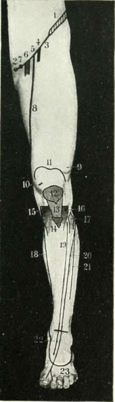

The Anterior Tibial Artery
Description
This section is from the book "Landmarks And Surface Markings Of The Human Body", by Louis Bathe Rawling. Also available from Amazon: Landmarks and Surface Markings of the Human Body.
The Anterior Tibial Artery
(Fig. XXII, 19., Fig. XXIII, 14.) The course of this vessel may be indicated by a line drawn from a point just below the level of the tibial tubercle, and midway between the outer tuberosity of the tibia and the head of the fibula, to a second point in front of the ankle midway between the two malleoli, at which level the artery lies between the tendons of the extensor longus hallucis and longus digitorum muscles. (Fig. XXII, 22.)
The anterior tibial artery is continued onwards as the dorsalis pedis as far as the base of the first interosseous space. (Fig. XXIII, 15.)
The posterior tibial artery starts at the lower border of the popliteus muscle as one of the terminal branches of the popliteal artery. (Fig. XXI, 20.)
It can be represented by a line which starts at the inferior angle of the popliteal space, on a level with the tubercle of the tibia, and which passes downwards and inwards to the mid-point between the posterior border of the internal malleolus and the inner border of the os calcis. At this level it lies under cover of the internal annular ligament, and bifurcates in this situation into the internal and external plantar arteries. (Fig. XXIV, 20-22.)
Behind the internal malleolus the posterior tibial artery lies between the tendons of the flexor longus hallucis and longus digitorum muscles, but on a slightly superficial plane.
Fig. XXII. The Front Of The Thigh And Leg
1. The iliac crest.
2. The pubic spine.
3. Poupart's ligament.
4. The anterior crural nerve.
5. The common femoral artery.
6. The common femoral vein.
7. The crural canal.
8. The superficial femoral artery.
9. Vastus externus.
10. Vastus internus.
11. The upper limit of the synovial membrane of the knee-joint.
12. The patella.
13. The ligamentum patellae.
14. The tubercle of the tibia.
15. The internal tuberosity of the tibia.
16. The external tuberosity of the tibia.
17. The head of the fibula.
18. The internal saphenous vein.
19. The anterior tibial artery.
20. The anterior tibial nerve.
21. The musculo-cutaneous nerve.
22. The dorsalis pedis artery.
23. The dorsal venous arch.
The internal plantar artery passes forwards to the cleft between the first and second toes, Fig whilst (Fig XXIX, 2.)the more important external plantar artery is first directed forwards and outwards towards the base of the fifth metatarsal bone, and then, changing direction, passes forwards and inwards to the base of the first interosseous space, (Fig. XXIX, 1.) forming in this latter part of its course the deep plantar arch. It anastomoses with the dorsalis pedis artery, which dips downwards between the two heads of the first dorsal interosseous muscle.
The external saphenous vein arises from the outer side of the venous arch on the dorsum of the foot, (Fig. XXIII, 16,17) passing upwards behind the external malleolus and along the outer and back part of the leg to the middle of the popliteal space, (Fig. XXI, 21.) where it pierces the deep fascia to open into the popliteal vein. It is accompanied in the greater part of its course by the external saphenous nerve, which extends forwards on the outer side of the foot as far as the tip of the little toe.
The internal saphenous vein arises from the inner side of the venous arch found on the dorsum of the foot. (Fig. XXIV, 10.)
It passes upwards in front of the internal malleolus, along the inner side of the leg and knee, behind the internal condyle of the femur, and its further upward course in the thigh is indicated by a line drawn from the adductor tubercle to the saphenous opening. Attention has previously been drawn to the elevation below the internal tuberosity of the tibia which is formed by the sartorius, gracilis and semitendinosus muscles, and below this prominence the saphenous vein is accompanied by the internal saphenous nerve, a branch of the deep division of the anterior crural. The saphenous nerve runs down the leg with the vein, in front of the internal malleolus of the tibia, (Fig. XXIV, 19.) and extends as far forwards as the ball of the great-toe. In the thigh the nerve crosses in front of the superficial femoral artery from without inwards, and accompanies that artery throughout the whole length of Hunter's canal.
The anterior crural nerve emerges from under cover of Poupart's ligament, (Fig. XXIV, 5.)about half-way between the anterior superior iliac spine and the pubic spine. The nerve lies nearly 1/2 inch external to the common femoral artery, and the same distance external to the femoral sheath.
The great sciatic nerve makes its exit from the pelvis through the great sacro-sciatic notch below piriformis muscle. (Fig. XXI, 12.) The nerve emerges from under cover of the lower border of the gluteus maximus muscle just to the inner side of the mid-point between the ischial tuberosity and the great trochanter of the femur. The nerve corresponds in direction to the upper two-thirds of a line drawn downwards from the above point to the middle of the popliteal space below. At the junction of the middle and lower thirds of the thigh the great sciatic nerve divides into its two terminal branches, internal and external popliteal.
The small sciatic nerve lies in the same line as the great sciatic, but extends downwards as far as the inferior angle of the popliteal space.
The internal popliteal nerve crosses the popliteal artery superficially from without inwards; (Fig. XXI, 13.) its onward continuation, the posterior tibial nerve, and the two terminal branches of the posterior tibial nerve, the internal and external plantars, all have the same surface marking as the corresponding arteries. Two points, (Fig. XXI, 20.) however, need to be borne in mind : first, the posterior tibial nerve crosses the corresponding artery superficially from within outwards and downwards and, secondly, the internal plantar nerve is relatively much more important than the corresponding artery.
The external popliteal or peroneal nerve was last seen to lie under cover of the biceps femoris tendon at the upper and outer boundary of the popliteal space. (Fig. XXI, 14,15, Fig. XXIII, 10,11)
The nerve follows the tendon downwards to the head of the fibula, and curls round to the antero-external aspect of the leg about 1 inch below the head of that bone, (Fig. XXIII, 12,13) dividing there into its two terminal branches, anterior tibial and musculo-cutaneous.
The anterior tibial nerve passes downwards and inwards to join the corresponding artery, lying external to the upper third of the artery, superficial to the middle third, (Fig. XXII, 20.) and external again to the lower third. The nerve extends forwards along the outer side of the dorsalis pedis artery as far as the cleft between the first and second toes, (Fig. XXIII, 12.) the contiguous sides of which toes it supplies.
The musculo-cutaneous nerve, (Fig. XXII, 21., Fig. XXIII, 13.) running down in the substance of the peronei muscles, becomes cutaneous below the middle of the leg. It then passes obliquely downwards and inwards across the anterior annular ligament, to be distributed to the greater part of the dorsum of the foot.
Continue to: